#Read dataset
dfBasqueNPI <- readRDS('./data/BasqueNPI.Rda')Assignment #2 Data Exploration with R - Answer Key
Task#1: Introduction to the dataset
Exercises in this assignment used a dataset with real data subset from a real Self-Paced Reading study on Negative Polarity Items and complementizer agreement in Basque (see Pablos, L., & Saddy, D. (2009). Negative polarity items and complementizer agreement in Basque. in Alter, K., Horne, M., Lindgren, M., Roll, M., & von Koss Torkildsen, J.(Eds.), Papers from Brain Talk: Discourse with and in the Brain. The 1st Birgit Rausing Language Program Conference in Linguistics. Lund: Lund University, Media Tryck. ISBN: 978-91-633-5561-5.)
This data is a real set with the outputs generated by the software Linger created by the MIT Ted Lab to easily conduct Self Paced reading experiments
1.1 Load required libraries for the assignment
The packages required for this assignment are tidyverse and moments for the kurtosis and skewness calculations.
1.2 Load dataset
The data for the exercise is contained in the file BasqueNPI.Rda in the /data folder.
This is a R format file, containing a data table. The data was saved using saveRDS() function so it can be read using readRDS() as described in the first workgroup section describing how to load a R format file.
Tip
The file location can be indicated with absolute or relative paths. The relative paths refers to the current working directory, that is indicated with ./ , therefore ./data/BasqueNPI.Rda can be read as: “file BasqueNPI.Rda in the data folder under the current directory”).
Caution
A few of you got an error when trying to open the file, saying that the file was corrupted when using the load() function in R.
saveRDS() and readRDS() allow to save a single R object to a file and to restore the object, . This differs from save() and load(), which save and restore one or more variables into the environment.
After this step you have a dataframe in the environment, with the following variables
EXPT - Specifies the type of data of the item collected, it contains three different values:
- practice: items presented at the beginning of the experiment to practice the method
- filler: items included in the experiment to ‘disguise’ the real measured target sentences.
- basquenpi: target items corresponding to the experimental manipulation.
Item – Factor identifying the sentence used (coded as a number from 1 to 72).
Subject – Factor identifying the participant on the experiment (coded as a number from 1 to 32)
EmbeddedSubject – Factor/predictor indicating the nature of the embedded subject with the following levels:
- [Empty] – for practice and filler items
- NP – for target sentences with a Noun Phrase as subject
- NPI – for target sentences with a Negative Polarity Item as subject
AgreementMorphology – Factor/predictor indicating the nature of agreement with the following levels:
- [Empty] – for practice and filler items
- Declarative – for target sentences that contained a complementizer with declarative morphology
- Partitive – for target sentences that contained a complementizer with partitive morphology
SequenceBin – the position of the item in the sequence seen by the subject.
WordNumber – the word number in the sentence (starting with 1)
Word – Actual word presented
RegionNumber – Region number for the analysis of the reading time
RWRT – RaW (recorded) Reading Time of the word
RWZS – Z-Score of the raw reading time
RSRT – Calculated Residual Reading Time
RSZS – Z-Score of the residual reading time
QPCT – Correctness of the comprehension response (100 – correct; 0 – incorrect)
Task#2: Explore Data & Calculate Summary Statistics
2.1 Select a subset of the data
Select a subset of data with only the target items from the experiment
#Your code
basquenpi_data <- dfBasqueNPI %>% filter(EXPT=="basquenpi")
head(basquenpi_data) EXPT Item Subject SequenceBin WordNumber Word RegionNumber RWRT
1 basquenpi 5 1 11 1 Kepak 1 554
2 basquenpi 5 1 11 2 ziurtatu 2 702
3 basquenpi 5 1 11 3 du 3 412
4 basquenpi 5 1 11 4 ikastolara 4 552
5 basquenpi 5 1 11 5 inor 5 393
6 basquenpi 5 1 11 6 autobusez 6 642
RWZS RSRT RSZS QPCT EmbeddedSubject AgreementMorphology
1 -0.611 14.48 -0.049 100 NPI Partitive
2 -0.025 -0.71 0.224 100 NPI Partitive
3 -0.636 35.67 -0.259 100 NPI Partitive
4 -0.687 -259.50 -0.624 100 NPI Partitive
5 -0.704 -92.13 -0.321 100 NPI Partitive
6 -0.301 -115.11 -0.243 100 NPI Partitive2.2 Plot histograms of the data.
Plot histogram of Raw Reading Time (RWRT)
To plot a histogram of the Raw Reading Time (RWRT) we use ggplot()
#Plot histogram
basquenpi_data %>% ggplot(aes(x = RWRT)) + geom_histogram()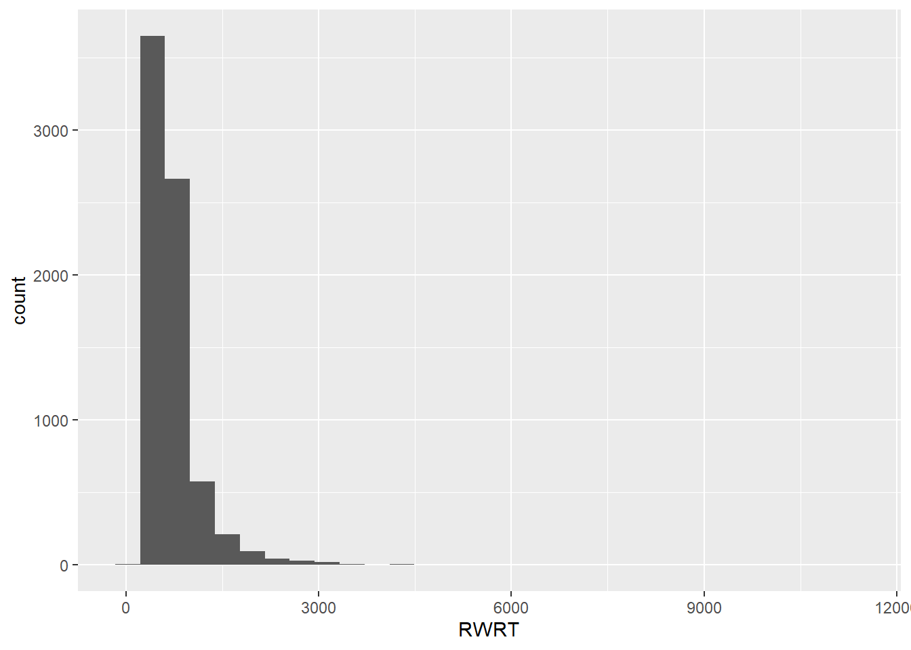
What can we observe in this distribution?
It is a disribution skewed to the right with a lower limit of 0 -> Since RWRT measures the Raw Reading Time, the minimum reading time is zero, obviously, as it can not contain negatives values.
The graph extends above 10000. Although not visible, that implies that there are
Most values seem to be between 0 and 2000: the default plot created by
geom.histogram()uses 30 subdivisions or bins. To have a more fine grouping, we can indicate the number of bins used with the argumentbinsbasquenpi_data %>% ggplot(aes(x = RWRT)) + geom_histogram(bins = 60)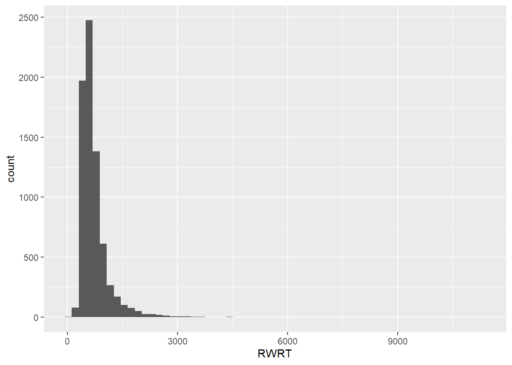
Now it can be clearly seen that the bigger proportion of reading times is between 500 and 1000 ms.
The distribution is very right skewed because there are probably a few measurements with very long reading time (e.g. possibly a participant loosing attention and not pressing a key).
We can check the histogram only for values of the RWRT less than a certain limit.
We will normally perform a filtering of outliers based on the knowledge of our experiement and the intial data exploration. For example, looking at the plot above, we could eliminate those trials with RWRT > 3000 ms considering that they are too long to be valid. Let’s plot a new histogram with only those trials with RWRT < 3000.
basquenpi_data %>% filter(RWRT<3000) %>% ggplot(aes(x = RWRT)) + geom_histogram(bins = 60)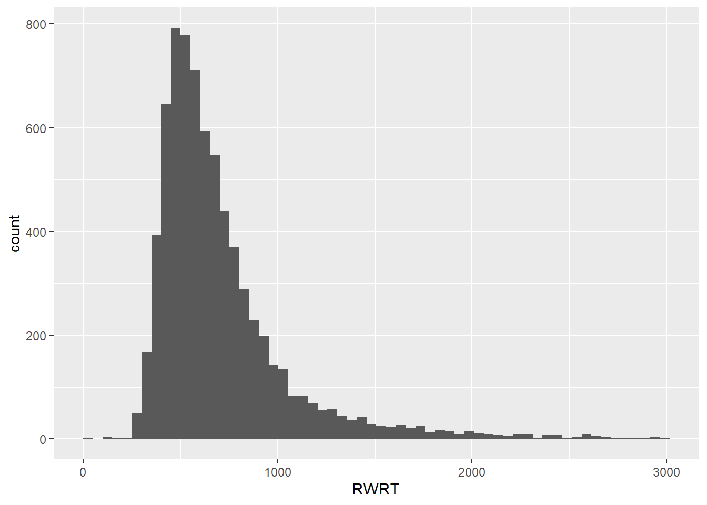
- Now we can see that the distribution is more symmetric, after removing outlayer points with RWRT > 3000. If we want to see how many trials we have removed with the filtering, we can calculate the percentage of trial removed
\(Percentage\,removed\,trials = \dfrac{n_{total}-n_{filtered}}{n_{total}}*100\).
There are many ways to know the size of observations in a dataframe (i.e. number of rows). The example below uses the function nrow() . We also demonstrate how you can write the results with a message on the screen using cat()
# calculation
n_total <- basquenpi_data %>% nrow()
n_filtered <- basquenpi_data %>% filter(RWRT<3000) %>% nrow()
n_removed <- (n_total - n_filtered)/n_total * 100
cat("Total number of observations: ", n_total, "\n")Total number of observations: 7328 cat("Number of observations with RWRT > 3000: ", (n_total - n_filtered) , "\n")Number of observations with RWRT > 3000: 44 cat("Percentage of data removed: ", n_removed, "%","\n")Percentage of data removed: 0.6004367 % Removing data points with RWRT > 3000, only results in 0.6% of the data being discarded.
Plot a histogram of the Residual Reading Time (RSRT)
The Residual Reading Time (RSRT) is a way to correct for sentence length, word length, and individual differences between participants’ reading speeds. It is referenced to the average reading time per participant, and can have negative values (indicating faster reading than the average). We will look at the way it is calculated in an assignment once we have gone over the principles of regression.
For the purpose of this exercise we can plot the histogram to compare with the RWRT.
basquenpi_data %>% ggplot(aes(x = RSRT)) + geom_histogram(bins = 60)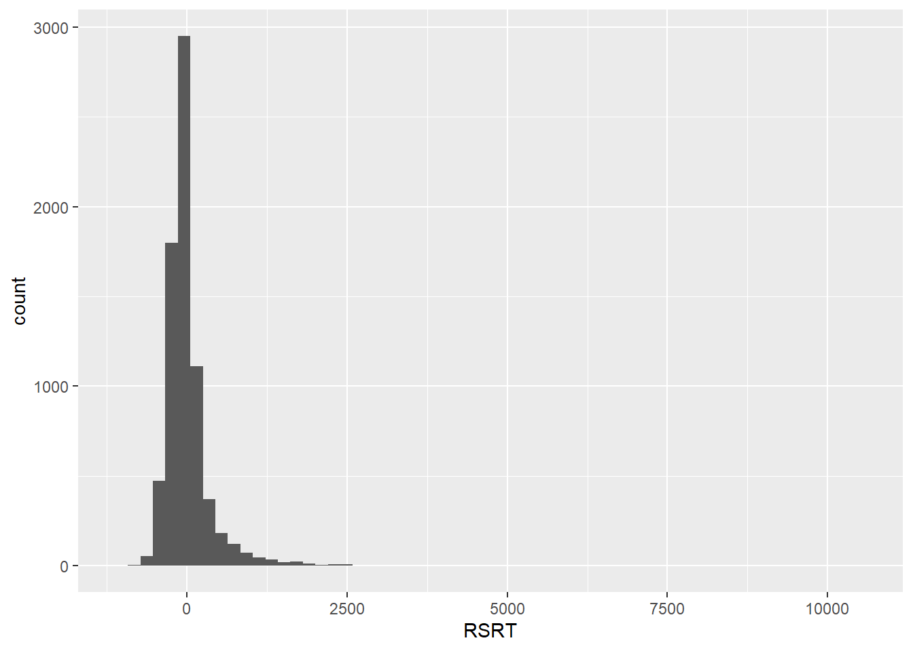
Provide your observations on the distribution:
The distribution is roughly centered around 0, and it is more symmetric than the RWRT.
Let’s plot the distribution of RSRT filtering the data as above based on the RWRT (RWRT<3000).
basquenpi_data %>% filter(RWRT<3000) %>% ggplot(aes(x = RSRT)) + geom_histogram(bins = 60)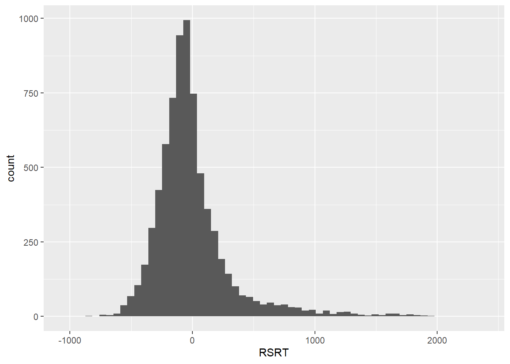
,We can see that the distribution is centered around 0 and still skewed to the right.
2.3 Calculate Skewness and kurtosis for both RWRT and RSRT
Skewness and kurtosis values using the functions with the same name in the library moments.
Calculate Skewness for RWRT
skewness(basquenpi_data$RWRT) [1] 6.682073What does the output value indicate?
- A positive skewness value means that the distribution is right skewed. This is quite clear looking at the histogram above.
Calculate Kurtosis for RWRT
kurtosis(basquenpi_data$RWRT)[1] 96.25985What does the output value indicate?
- A positive kurtosis indicates a distribution more peaked than a normal distribution with the same mean and standard deviation.
Below we calculate the same values for the RSRT
skewness(basquenpi_data$RSRT) [1] 7.348828kurtosis(basquenpi_data$RSRT)[1] 118.0003- As can be seen the
RSRTis even more skewed and with higher kurtosis (more ‘pointy’) than theRWRTdistribution.
Finally let’s look at the values on the dataset for values of RT < 3000 ms
basquenpi_filtered<-basquenpi_data %>% filter(RWRT < 3000)
skewness(basquenpi_filtered$RWRT)[1] 2.377025kurtosis(basquenpi_filtered$RWRT)[1] 10.67131skewness(basquenpi_filtered$RSRT)[1] 2.226802kurtosis(basquenpi_filtered$RSRT)[1] 11.14173The value show that the distribution is closer to a normal (not normal though) in both measures after the filtering as expected.
2.4 Calculate mean and standard deviation
Calculate the mean and standard deviation of the Raw Reading Time (RWRT) for the different experimental conditions in Region Number 5 to generate a summary table.
There are many ways to do this in R. Below we include one way using tidyverse summarize function:
basquenpi_data %>% filter(RegionNumber==5) %>% group_by(EmbeddedSubject,AgreementMorphology) %>% summarize(m_rwrt = mean(RWRT))`summarise()` has grouped output by 'EmbeddedSubject'. You can override using
the `.groups` argument.# A tibble: 4 × 3
# Groups: EmbeddedSubject [2]
EmbeddedSubject AgreementMorphology m_rwrt
<fct> <fct> <dbl>
1 NP Declarative 751.
2 NP Partitive 751.
3 NPI Declarative 662.
4 NPI Partitive 587.| Mean | Embedded Subject | ||
|---|---|---|---|
| NP | NPI | ||
| Agreement Morphology | Declarative | 750.70 | 661.67 |
| Partitive | 751.33 | 586.60 |
A similar approach can be followed to calculate the Standard deviations table
basquenpi_data %>% filter(RegionNumber==5) %>% group_by(EmbeddedSubject,AgreementMorphology) %>% summarize(sd_rwrt = sd(RWRT))`summarise()` has grouped output by 'EmbeddedSubject'. You can override using
the `.groups` argument.# A tibble: 4 × 3
# Groups: EmbeddedSubject [2]
EmbeddedSubject AgreementMorphology sd_rwrt
<fct> <fct> <dbl>
1 NP Declarative 357.
2 NP Partitive 441.
3 NPI Declarative 808.
4 NPI Partitive 275.| Std Dev | EmbeddedSubject | ||
|---|---|---|---|
| NP | NPI | ||
| AgreementMorphology | Declarative | 357.30 | 807.98 |
| Partitive | 440.71 | 274.91 |
2.5 Calculate five-points summary
Calculate and create a table with the five-point summary (i.e., min, max, median, 1st quartile(Q1) and 3rd quartile(Q3)) for the Residual Reading Time (RSRT) for the following subset of data:
- EmbeddedSubject = NP
- AgreementMorphology = Partitive
- Region Number = 5
We can use the summary() function to calculate the 5-point summary.
basquenpi_data_subset <- basquenpi_data %>% filter( (RegionNumber == 5) & (AgreementMorphology=="Partitive") &(EmbeddedSubject == "NP"))
summary(basquenpi_data_subset$RSRT) Min. 1st Qu. Median Mean 3rd Qu. Max.
-495.320 -90.130 0.985 83.313 120.080 3089.090 | Min | Max | median | 1st Quartile | 3rd Quartile |
|---|---|---|---|---|
| -495.32 | 3089.09 | 0.985 | -90.13 | 120.08 |
2.6 Produce a boxplot for RWRT
2.6.1. Create a boxplot for RSRT
Produce a boxplot for the RWRT in different conditions reflected in the table of task 2.4: in Region 5, for the conditions Declarative NP, Declarative NPI, Partitive NP, Partitive NPI.
basquenpi_data %>% filter(RegionNumber == 5) %>%
ggplot(aes(x=EmbeddedSubject, y= RWRT, fill = AgreementMorphology)) + geom_boxplot()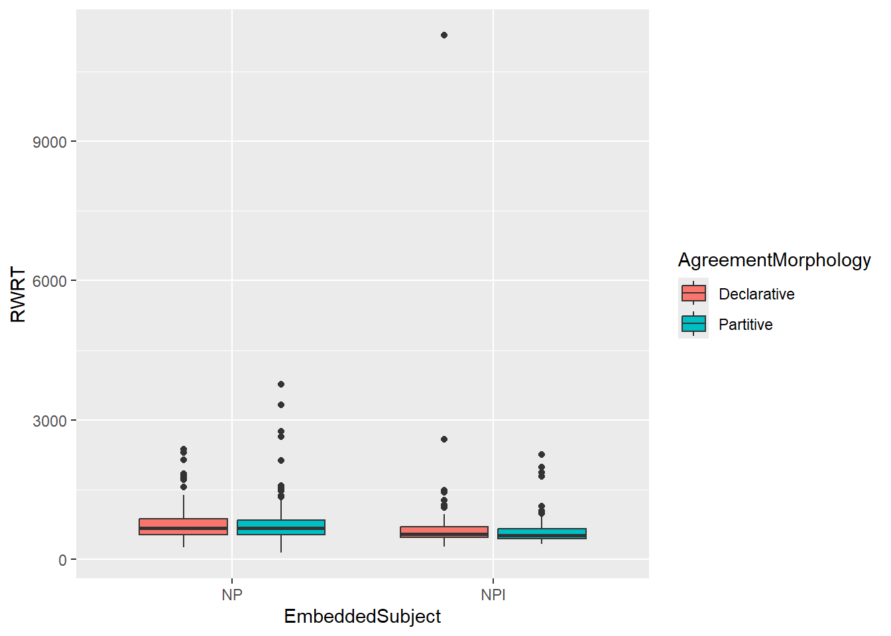
What can you observe in the plot?:
- There is a clear outlier in the NPI-Declarative condition.
- The NP-Partitive condition seems to have more dispersion that the other ones.
If we plot again the same filtering the data to keep only the points with RWRT < 2500 :
basquenpi_data %>% filter( (RegionNumber == 5) & (RWRT < 2500) ) %>%
ggplot(aes(x=EmbeddedSubject, y= RWRT, fill = AgreementMorphology)) + geom_boxplot()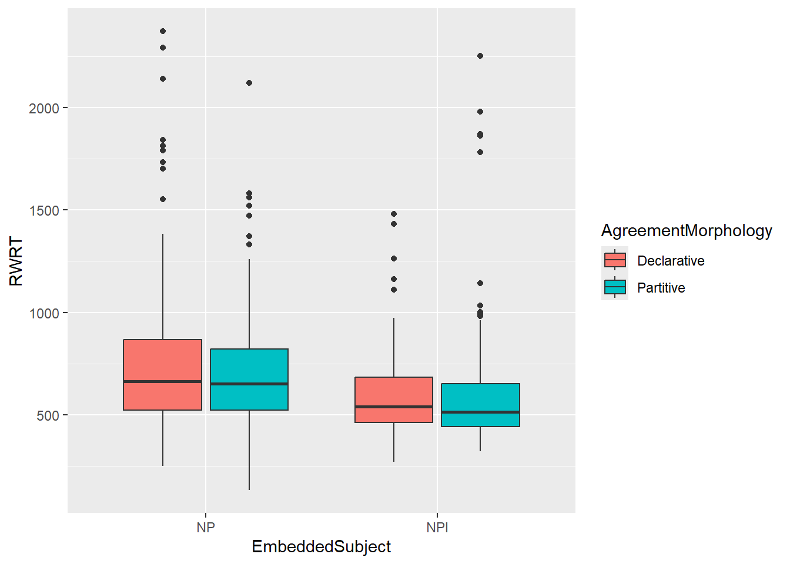
What differences do you observe with the previous plot?
Now it is clearer to appretiate what is the difference between the different conditions.
This plot allows a clear comparison between the different levels of
AgreementMorphology, but what is we wanted to compare NPI vs NP within each level ofAgreementMorphology? We can exchange the variables betweenxand thefillarguments.
basquenpi_data %>% filter( (RegionNumber == 5) & (RWRT < 2500) ) %>%
ggplot(aes(x=AgreementMorphology, y= RWRT, fill = EmbeddedSubject)) + geom_boxplot()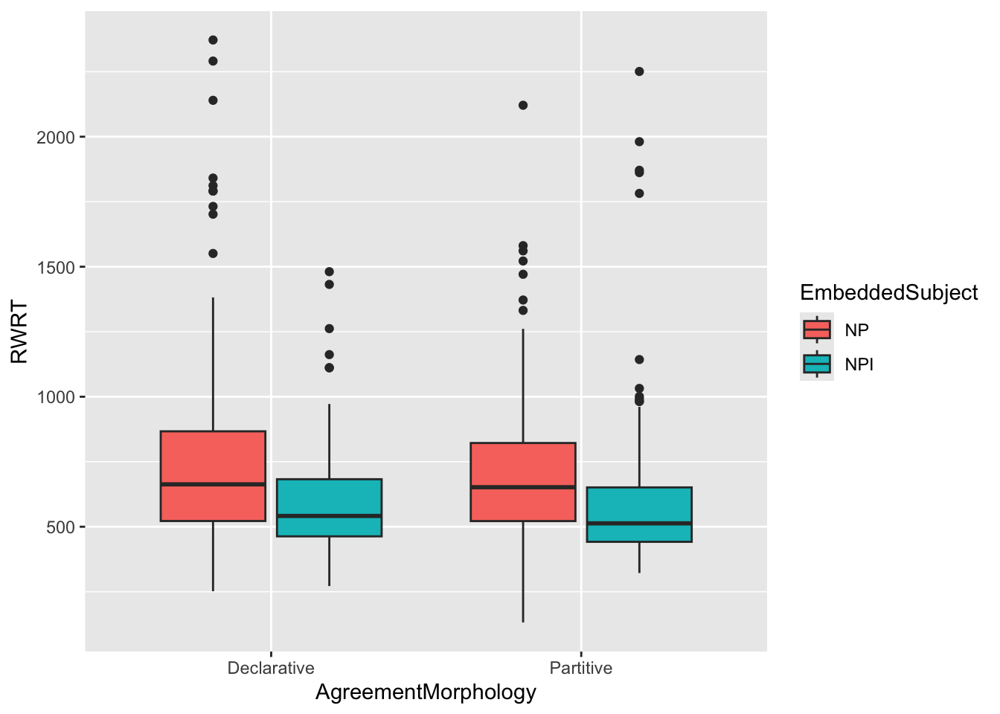
2.6.3. Create a boxplot for RSRT
As in the previous section, we create now the boxplot for RSRT as follows:
basquenpi_data %>% filter(RegionNumber == 5) %>%
ggplot(aes(x=EmbeddedSubject, y= RSRT, fill = AgreementMorphology)) + geom_boxplot()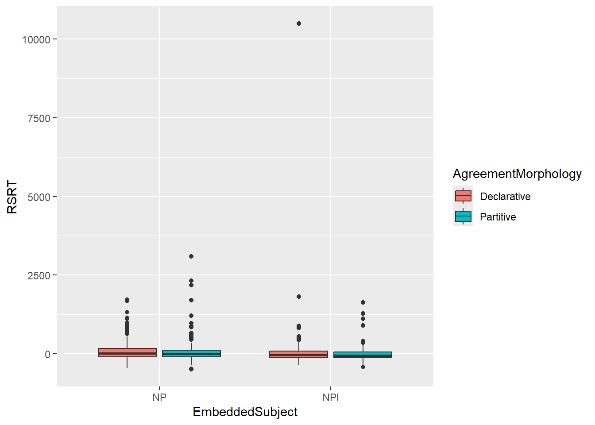
Again if we filter the data with a RWRT < 2500
basquenpi_data %>% filter( (RegionNumber == 5) & (RWRT < 2500) ) %>%
ggplot(aes(x=EmbeddedSubject, y= RSRT, fill = AgreementMorphology)) + geom_boxplot()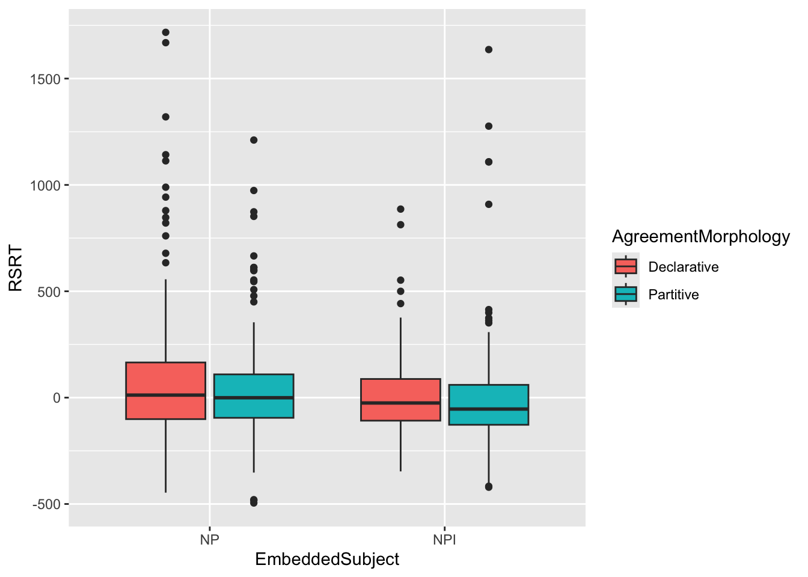
2.7 Normality checks
To check the distribution of the data, we saw in the lecture that a Quantile-Quantile Plot (qqplot) can be used. The function qqplot() is generic and compares some data with any type of distribution. To compare your data with a normal distribution and check normality, you can use qnorm().
We generate the Quartile-Quartile plot for RWRT using the command below
qqnorm(basquenpi_data$RWRT)
qqline(basquenpi_data$RWRT, col = 'red',lty='dashed')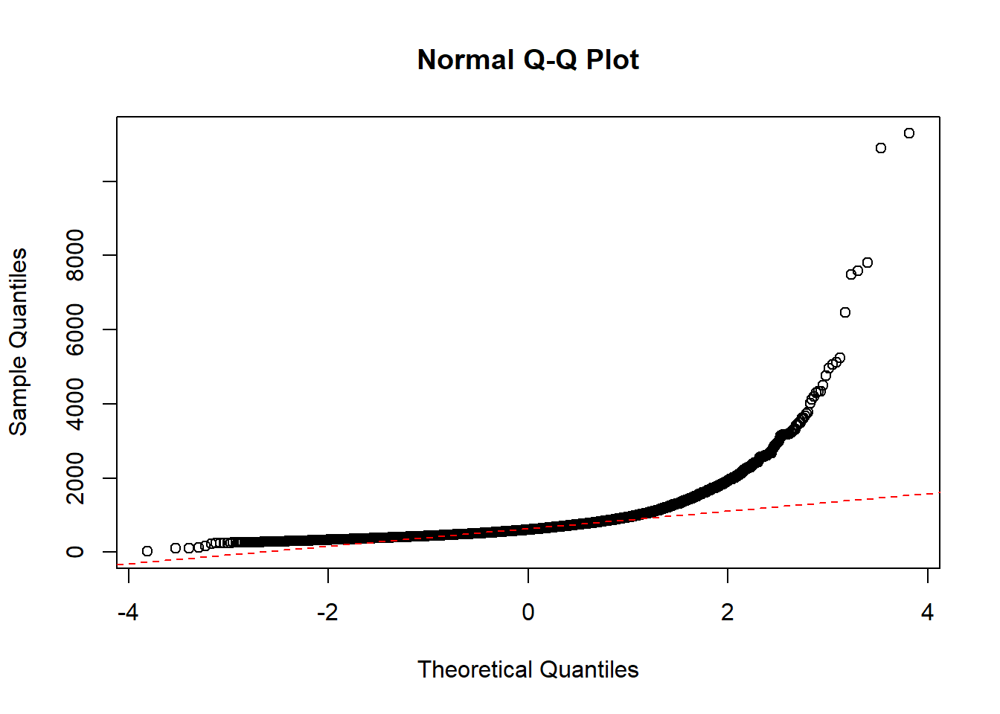
The plot deviates clearly from a straight line, as expected by the skewness and kurtosis values calculated in task 2.2.
Note
In the code we have used qqline() to plot a reference straight line for visual comparison of the separation from the expected line in a normal distribution.
For comparison, let’s look at the q-q plot for the filtered data
basquenpi_data_filtered <- basquenpi_data %>% filter(RWRT<2500)
qqnorm(basquenpi_data_filtered$RWRT)
qqline(basquenpi_data$RWRT, col = 'red',lty='dashed')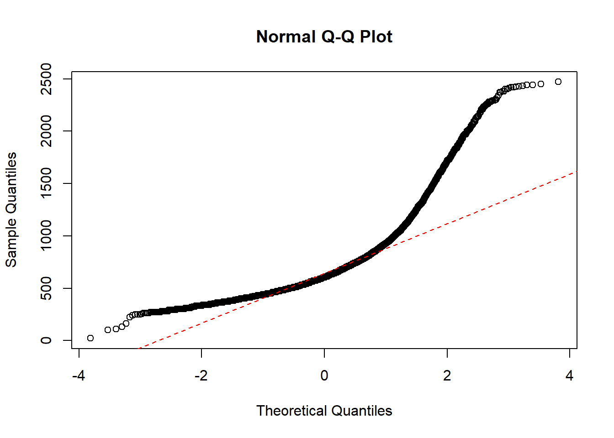
Although the plot is more linear, still deviates from the normal distribution.
Task #3 - Calculate data summaries
The assignment asked to generate a summary dataframe (basquenpi_data_summary ) using the filter(), group_by() and summarize()functions in dplyr with the data grouped by the factors RegionNumber, EmbeddedSubject and AgreementMorphology, and summarized via the addition of columns specifying the mean and standard deviations of the Raw Reading Time and Residual Reading Time.
Warning
Several of you pointed out that the filter() function was not required to be used in this task, which is correct starting from the data already filtered in task 2.1.
In the code below I assumed to perform a full processing chain from raw data to illustrate how using pipes can render readable code with all operations of the data together.
Of course both approaches are correct.
We can generate the requested output with the following code line:
basquenpi_data_summary <- dfBasqueNPI %>% filter(EXPT == "basquenpi") %>% #filter the data
group_by(EmbeddedSubject,AgreementMorphology, RegionNumber) %>% #apply a grouping
summarize(mean_rt = mean(RWRT), sd_rt=sd(RWRT), mean_rs = mean(RSRT), sd_rs= sd(RSRT))`summarise()` has grouped output by 'EmbeddedSubject', 'AgreementMorphology'.
You can override using the `.groups` argument.head(basquenpi_data_summary,20)# A tibble: 20 × 7
# Groups: EmbeddedSubject, AgreementMorphology [2]
EmbeddedSubject AgreementMorphology RegionNumber mean_rt sd_rt mean_rs sd_rs
<fct> <fct> <int> <dbl> <dbl> <dbl> <dbl>
1 NP Declarative 1 789. 436. 41.4 388.
2 NP Declarative 2 727. 395. -36.3 360.
3 NP Declarative 3 611. 414. 104. 369.
4 NP Declarative 4 893. 492. 16.1 406.
5 NP Declarative 5 751. 357. 84.3 330.
6 NP Declarative 6 759. 352. -28.2 312.
7 NP Declarative 7 627. 292. -68.2 268.
8 NP Declarative 8 515. 186. -82.3 177.
9 NP Declarative 9 681. 406. -71.6 352.
10 NP Declarative 10 700. 554. -79.8 557.
11 NP Partitive 1 745. 371. -3.58 338.
12 NP Partitive 2 713. 273. -49.1 277.
13 NP Partitive 3 573. 288. 65.7 260.
14 NP Partitive 4 971. 716. 102. 664.
15 NP Partitive 5 751. 441. 83.3 413.
16 NP Partitive 6 786. 405. -1.84 362.
17 NP Partitive 7 621. 299. -74.4 288.
18 NP Partitive 8 613. 321. -29.2 297.
19 NP Partitive 9 852. 950. 112. 911.
20 NP Partitive 10 865. 560. 56.2 562.EXTRA CREDIT - Task#4: Plotting with ggplot2
The plot we want to create shows the mean RWRT for each region for the conditions where EmbeddedSubject==NP, for the two different levels of AgreementMorphology.
We present below the step-by-step code to build up the plot, and at the end we put it all together in a single code line.
From the dataframe created in task 3.2 first we select the subset of cases where EmbeddedSubject==NP
basque_npi_summary_NP <- basquenpi_data_summary %>% filter(EmbeddedSubject=="NP")First step is to create a definition for a plot. With the command below, we create a plot based on the data in basque_npi_summary_NP and save the plot definition in a variable called p. Typing the name of the variable shows the information from the plot as we build it.
p<-ggplot(basque_npi_summary_NP)
p
At this point, nothing is shown, because we only specified that we will make a plot based on the data. The next step is to add the Aesthetics. This specifies what data the plot will use:
p<-p+aes(x=RegionNumber, y=mean_rt)
p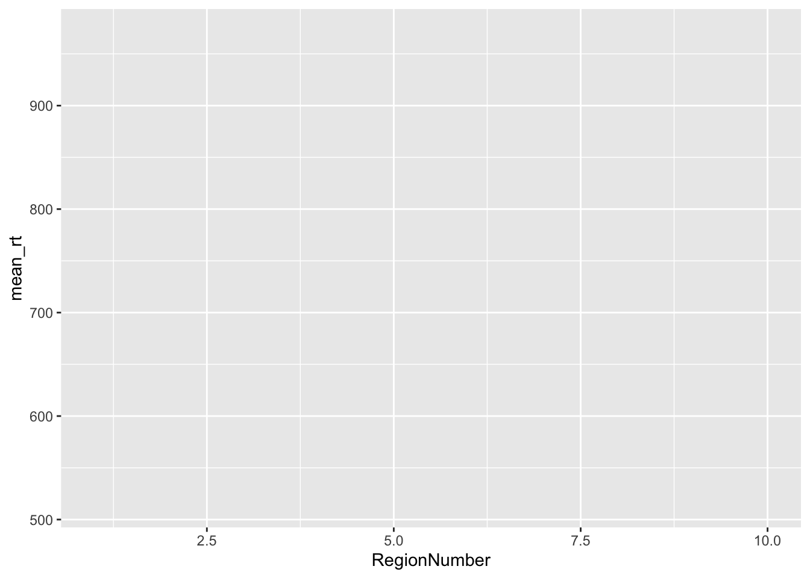
With the command above, we informed that we will plot the mean_rt as a function of the RegionNumber. Still nothing is displayed, because we haven’t said yet how we plot it (lines, points, bars, etc). As you can see, we don’t need to provide in the commad the name of the variable containing the columns mean_rt and RegionNumber, because p knows which is the underlying data of the graph.
With the next command, we specify that we want to have a line using geom_line(), where each type of line corresponds one of the levels of AgreementMorphology
p+geom_line(aes(linetype=AgreementMorphology))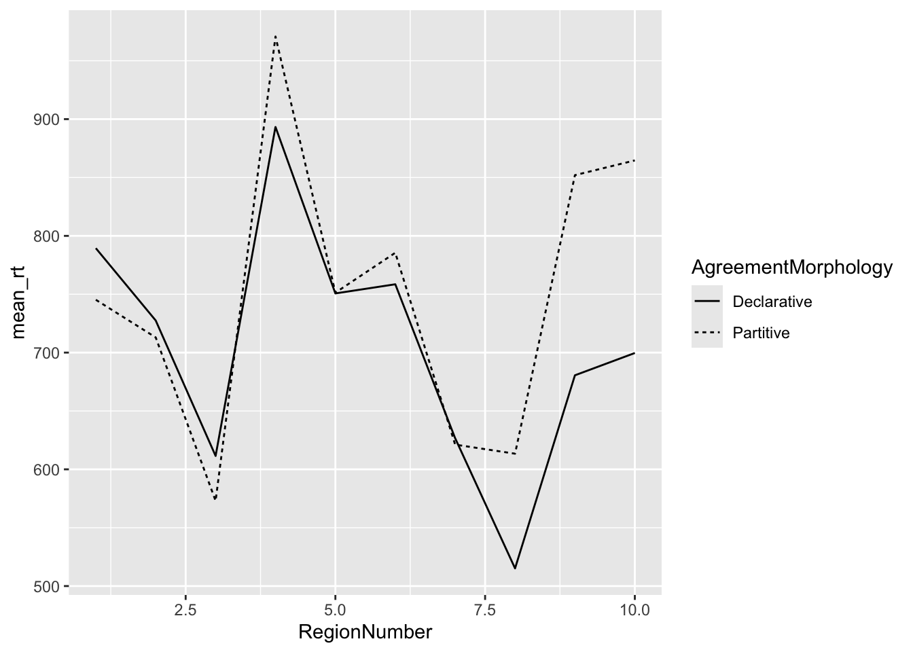
Now, as you can see we get a graph!
On purpose, I did not saved the result back in the p variable, to illustrate a point. What if we wanted to have instead a barchart? We just call geom_bar() instead.
p+geom_bar(stat="identity",aes(fill=AgreementMorphology),position=position_dodge() )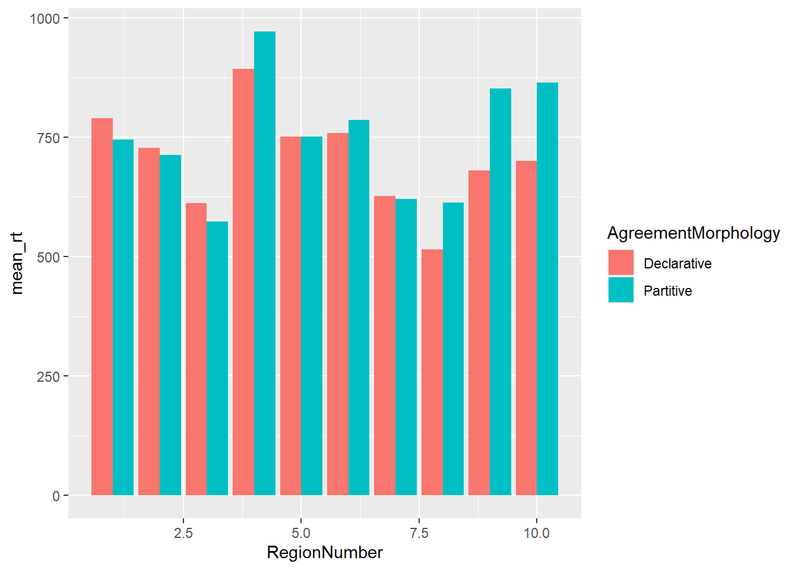
Coming back to our example, let’s add data points to the chart using geom_point(), where each point shape is also dependent on the level of Agreement Morphology.
p<-p + geom_line(aes(linetype=AgreementMorphology))+
geom_point(aes(shape=AgreementMorphology))
pWe have now all the information we wanted in the chart and stored in the variable p. For the axis, the RegionNumber only makes sense as a discrete value. The command below adds information on the x scale, defining it a continuous with values in a sequence from 1 to 10 in steps of 1.
p <- p + scale_x_continuous(breaks = seq(1,10,1))
p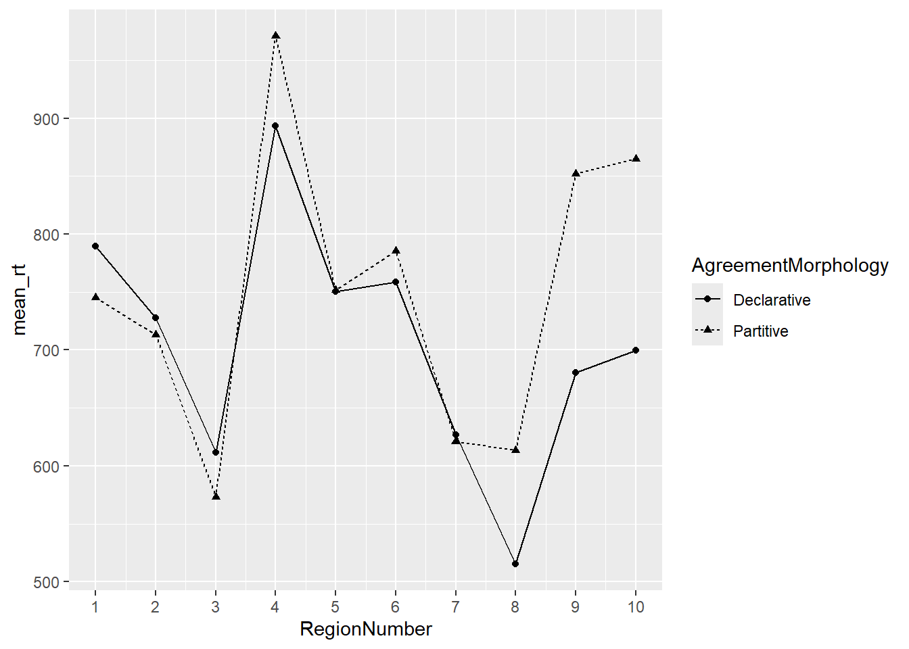
The last step is to complete the decorations of the graph. We can do that using a number of functions from the ggplot2 library.
p + scale_color_grey() + theme_classic()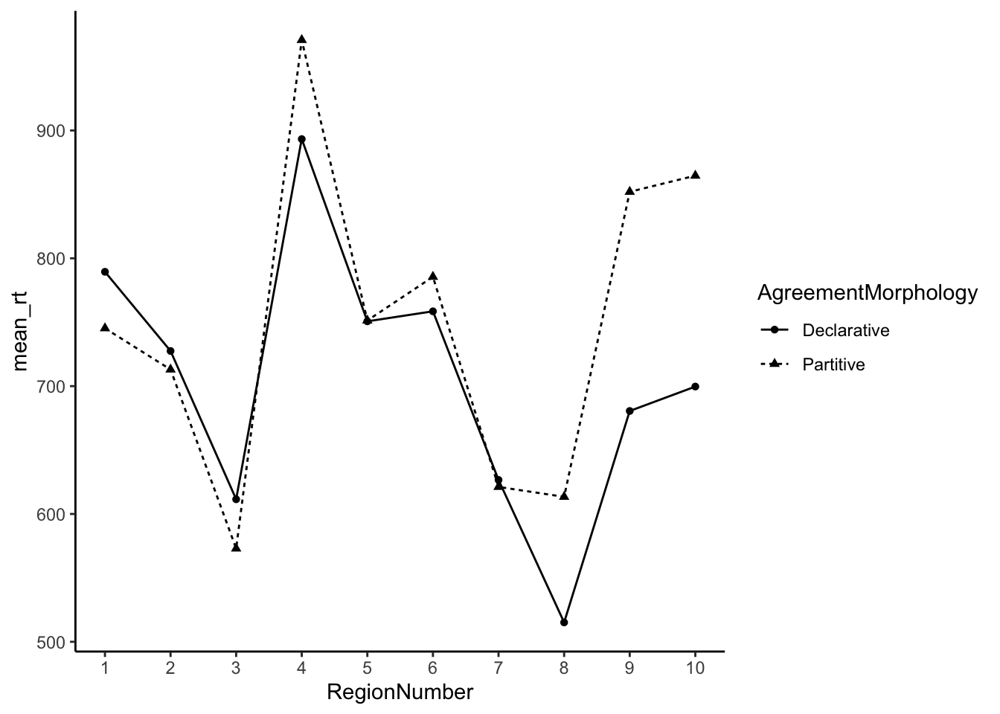
This is the plot requested to reproduce.
If we put the code together, we could do the following
p <- basquenpi_data_summary %>% filter(EmbeddedSubject=="NP") %>%
ggplot(aes(x = RegionNumber, y = mean_rt)) +
geom_line(aes(linetype=AgreementMorphology)) +
geom_point(aes(shape=AgreementMorphology)) +
scale_x_continuous(breaks = seq(1,10,1)) +
scale_color_grey() +
theme_classic()
p
Same plot as before.
Note
Note that in this exercise we maintain black and white (and grey) color with dashed and solid lines that is a format normally used for many publications.
As an illustration, let’s expand the example to include also error bars in the plot with the Standard Error of each point.
As a reminder, the standard error can be calculated as
\(SE = \frac{\sigma_{\bar{X}}}{\sqrt{n}}\)
First, let’s modify the summary variable to also calculate the SE in the variables se_rt and se_rs
basquenpi_data_summary_new <- dfBasqueNPI %>% filter(EXPT == "basquenpi") %>% #filter the data
group_by(EmbeddedSubject,AgreementMorphology, RegionNumber) %>%
summarize( mean_rt = mean(RWRT),
sd_rt=sd(RWRT),
se_rt = sd_rt/sqrt(n()),
mean_rs = mean(RSRT),
sd_rs= sd(RSRT),
se_rs = sd_rs/sqrt(n()))`summarise()` has grouped output by 'EmbeddedSubject', 'AgreementMorphology'.
You can override using the `.groups` argument.In our plot, we want to display for every category an error bar. This can be done with the ggplot function geom_errorbar(). That function has two main arguments to specify the range of the error bar: ymin and ymax . The values of the error bars are \(\overline{X}\pm SE\)
p <- basquenpi_data_summary_new %>% filter(EmbeddedSubject=="NP") %>%
ggplot(aes(x = RegionNumber, y = mean_rt)) +
geom_line(aes(linetype=AgreementMorphology)) +
geom_point(aes(shape=AgreementMorphology)) +
scale_x_continuous(breaks = seq(1,10,1)) +
scale_color_grey() +
theme_classic() +
geom_errorbar(aes(ymin = mean_rt-se_rt, ymax = mean_rt+se_rt) , width= 0.2,color = 'grey')
p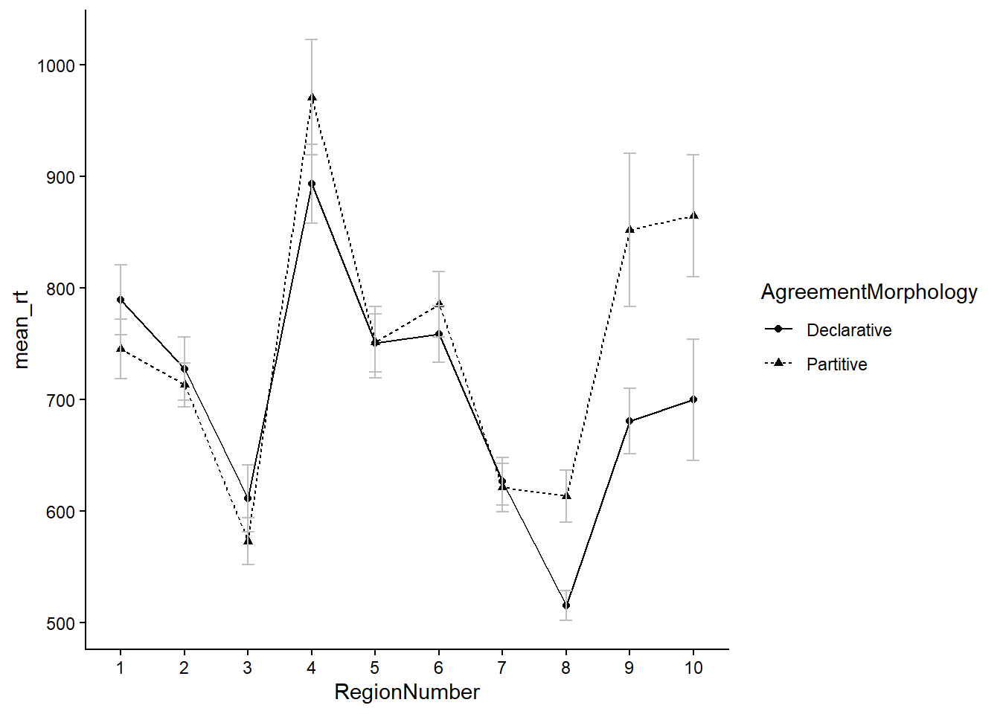
This is a more adequate plot to assess the data, as it shows that in some regions, the difference is within the error (e.g. Region 6) and might not be significant. We will look in future workgroups at how to confirm this statistically with a linear model.
End of the assignment #2
2.6.4. Comment on the differences between the RWRT and RSRT plot.